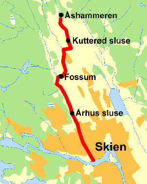

Innhold levert av Bosse Arnholm (arnholm.nu)
5 km nord for Skien ligger Fossum Hovedgård, hvor familien Løvenskiold har hatt sitt sete siden 1739. Eiendommen omfatter 330 km2 med hovedsaklig skog og innsjøer.
Eiere av kanalen var:
Ca 1856-1868 Herman Løvenskiold og Otto Joachim Løvenskiold i sameie
1868-1873 Herman Løvenskiold
1873-1885 Anna Sofie Hedevig Løvenskiold
1885-ca 1908 Herman Leopoldus Løvenskiold
Det har ikke lykkes å finne opplysninger om kanalen har hatt et navn. Den omtales derfor i denne teksten som Løvenskiold Fossums kanalanlegg.
Kanalanlegget bestod av tre deler:
1. Falkumelva med Århus sluse.
2. Trallevei forbi Fossum
3. Hoppestadelva med Kutterød sluse
Århus sluse
Falkumelva var den første strekningen av kanalen som blei gjort farbar.
Elva starter ved Fossum hvor Bøelva og Hoppestadelva møtes, og passerer noen stryk ved Århus før den munner ut i
Telemarkskanalen.
Ved Fossum lå et jernverk og noen sager på midten av 1800 tallet.
Jernverket hadde gruver ved Ulefoss og Arendal og malmen måtte fraktes med hest og kjerre det siste stykket til
Fossum. På samme tungvinte måtte blei skuren fra sagbruket kjørt til Skien.
Et sluseanlegg ved Århusstrykene ville muliggjøre båtferdsel helt opp til Fossum, og dermed lette
transporten betydelig.
Mekaniker Josef Severin Josefsen Steen (1811-1880) fra Larvik fikk oppdraget med å konstruere sluseanlegget. Han
hadde tidligere oppført og forbedret en rekke sagbruk i skiensområdet.
Det er litt uklart når slusene blei bygget.
2 historiebøker hevder det var 1862 mens en annen bok mener det var ca 1856.
I Tinglysningsprotokoll nr. IV 1, side 181, Gjerpen sorenskriveri finner man følgende:
"Kontrakt, hvorved eieren af Aarhus tillader eieren af Fossum jernværk at anlægge en sluse i Falkumelven,
hvortil afgives fornøden grund, samt til i den hensigt at foretage opdæmning med videre i elveleiet mod
erstatning mot forvoldt skade og mod at Fossum værks eier anbringer og for eftertiden vedligeholder en bro
over elven, dat. 15. december 1856, tinglyst 6. nov. 1860."
Ferdsel på kanalen den første tida
De første åra av kanalens drift foregikk frakten til og fra Fossum med lange, smale prammer eller lektere med
store årer.
Lasten bestod av malm, sinders og kullved til jernverket og plank fra sagbruket.
31 mai 1867 blei Fossum Jernverk nedlagt etter nesten 330 års drift og dermed stod sagbruket igjen som eneste
bruker av kanalen.
Fra sagbruket blei det i tidsrommet 1861 1869 årlig transportert mellom 4863 og 12000 tylfter skåren last.
Gjennomsnittlig 6740 tylfter per år. ( 1 tylfte tilsvarer 12 planker/bord )
Tresliperiene bygges
I 1884 flyttes sagbruket fra Fossum til Bøle ved Skienselva. Tømmeret fra vassdragets øvre deler måtte fraktes
vannveien til det nye sagbruket og Falkumelva blir utelukkende en fløtningskanal da all industri er borte.
Denne situasjonen vedvarer bare 2 år for i 1886 står det nyoppført Fossum Tresliperi klar til drift. Det er
bygget på den gamle jernverkstomta.
Ved Hoppestadelva litt lengre opp i vassdraget starter Ås Tresliperi sin produksjon i 1888.
Den samlede produksjonen ved begge sliperier kom etter hvert opp i ca 9000 tonn våt tremasse.
Fra Ås Tresliperi gikk lasten med tremasseballene (stoffen) ned Hoppestadelva til Fossum med flatbunnede prammer
eller lektere, også kalt barker. En mann gikk langs elvebredden og dro fartøyet etter et langt tau, mens to sto
ombord og staket og holdt fra land. Denne strekningen var ikke problemfri da Kutterødfossen, også kalt
Steikefossen måtte passeres.
Vel framme på Fossum blei fartøyene lastet om og ballene ført på traller forbi damanlegget og ned til
Falkumelva. Her blei de sammen med stoffballene fra Fossum Tresliperi fraktet ned kanalen og videre ut til Bøle,
hvor lagerhuset (Stoffhuset) og utskipningsstedet til sliperiene lå.
Kutterød sluse
For å muliggjøre en grei passasje for prammene ved Kutterødfossen bygget man i 1892 et sluseanlegg utenom
fossen.
Dette sluseanlegget ble gravd som en kanal på vestsida av elva. På den måten kunne både tømmer og prammer
passere Kutterød uten vanskligheter.
Mannen på Nordre Hoppestad, Sveinung Hansson Hem har antagelig sett seg en smule arg på dette sluseanlegget, som
lå på hans grunn, og stukket kjepper i hjula for arbeidsfolka som utførte jobben med anlegget.
Under denne konflikten mottok Hoppestadmannen dette brevet:
Fossum, 30 april 1892
Herr Svenung Hanssen
Jeg erfarer at De forleden hindret mine folk at foretage Bortminering af Fjeld i Fossen ved Kutterød. En
saadan Optreden fra deres Side overrasker mig høielig, og jeg er nødt til at tilkjendegive Dem, at jeg ikke
vil finde mig i at De paa denne Vis hindrer mine Folk i sit arbeide og derved paafører mig Udgifter. Det er
ved Sorenskriverens Kjendelse bragt paa det Rene, at Eiendomsretten til Vandfaldet er mit, og De faar lade
denne Kjendelse staa, indtil høiere Ret hvis De har Lyst til at prøve den afgiver ny Kjendelse og De ikke
begribe at deres personlige forvissning om Sagen ikke forandrer
Eiendomsforholdet.
Ærbødigst
Løvenskiold
Dampbåttrafikk på kanalen
Rundt 1880 anskaffet bedriften slepebåten D/S Sirius som overtok det meste av bukseringen i Falkumelva. I
folketellingen for 1891 er Halvor Haraldsen (1854-1931) kaptein ombord.
D/S Sirius blir i 1895 avløst av en ny slepebåt fra Akers Mekaniske Verksted som får navnet D/S Speed. Halvor
Haraldsen fortsatte som skipper ombord på den nye båten og hadde denne stillingen alle åra D/S Speed var i
Løvenskiold -Fossums eie (1895-1925). Han var forøvrig dronning Sonjas farfar.
Om D/S Speed finnes følgende opplysninger:
|
Byggenr |
Maskinnr |
Skrogdim. i fot |
Brutto |
Netto |
Maskindim i tommer |
Slag |
Damp |
IHK |
|
159 |
378 |
44,9 x 11,1 x 6,0 |
17,70 T |
4,18 T |
8 x 15 |
12 |
110 |
78,4 |
Slusevoktere
Den første omtalen av slusevoktere i folketellingene for Gjerpen herred finner man i 1891. Der er Ambros Larsen
(1846 - 1931) på plassen Skottland under Fossum oppført som eneste slusevokter i herredet. I folketellingen for
1900 er Kristian Jørgensen (1834 - 1903) på Århus gård aleine om å være oppført som slusevokter.
Begge disse gårdene ligger like ved Århus sluse, så det er naturlig å anta at de arbeidet der.
En grunn til at denne yrkestittelen ikke finnes i folketellingene for 1865 og 1875 kan være at behovet for
slusevoktere først oppstod når dampslepebåten kom.
Noe som styrker denne teorien er at ved Kutterød sluse, hvor kun prammer passerte, er det ingen bosatte
slusevoktere registrert. Muligens utførte mannskapet på disse farkostene slusingen selv.
Det må tillegges at folketellingene kan være unøyaktige. Kvaliteten er prisgitt de personene som samlet inn
opplysningene.
Bruer over kanalen i Falkumelva
Over Falkumelva ble det anlagt tre bruer før år 1900.
Den første var som tidligere nevnt en overgang i forbindelse med Århus sluse og damanlegg. Et stykke lengre ned
i elva lå Gulsetbrua fra 1871. Dette var ei klaffebru som måtte heves for kanalentafikken.
Den tredje brua krysset elva like før utløpet i Hjellevannet. Den blei bygget i 1870 åra og fikk navnet
Tegelverksbrua etter Fartangen Tegelverk som lå her. Seiner byttet den navn til Jonassens bru.
Falkumbrua, som kom til å avløse de tre eldre, ble ferdig i 1903. I motsetning til de gamle trebruene som
krevdet mye vedlikehold, var den nye oppført i stein, med hvelv og solid fundamentering.
Kanalen nedlegges
Sliperiene på Fossum og Ås fikk etter hvert vanskligheter med å hevde seg i konkurransen pga gammeldags
teknologi og kostbar transport. De blei derfor nedlagt i 1906.
Bedriften flyttet hele virksomhet til Myra ved utløpet av Falkumelva, hvor et nytt og dobbelt så stort
Tresliperi begynte sin produksjon i 1908.
Det var ikke lengre brukt for kanalen og den blei delvis revet.
Fredrik Bergsli Andersen
|
Falkumelva med Århus bru og sluse i bakgrunnen cirka 1900. Maleri av Ridderspore |
Restene av Århus sluse sees som et eget elveløp til venstre i elva. Flyfoto 1937 |
Flyfoto Kutterød. Kanalløpet til venstre og fossen til høyre |
|
Kutterød. Kanalløpet til venstre og fossen til høyre. |
Kutterød. Kanalløpet med rester av sluseanlegget. |
Kutterød. Nærbilde av sluseanleggesrestene. |
Kutterød. Innløpet til slusene sett ovenfra. |
© Bilderna tagna av Fredrik Bergsli Andersen 5 september 2011.
|
Fossum Hovedgård og Fossum jernverk. Litografi av P. Wergmann ca. 1860. |
Konstruksjonstegning av Gulsetbrua |
De gamle bruene over Falkumelva |
Sänd gärna kommentarer och fler uppgifter till: mig!
Gå tilbake til samlingssiden for nordiske
kanaler.
samlingssidan för nordiska kanaler.
Denna sida ändrades senast
{kind=link}
{kind=link}
{kind=link}
{kind=link}
{kind=link}
{kind=link}
{kind=link}
{kind=link}
{kind=link}
{kind=link}